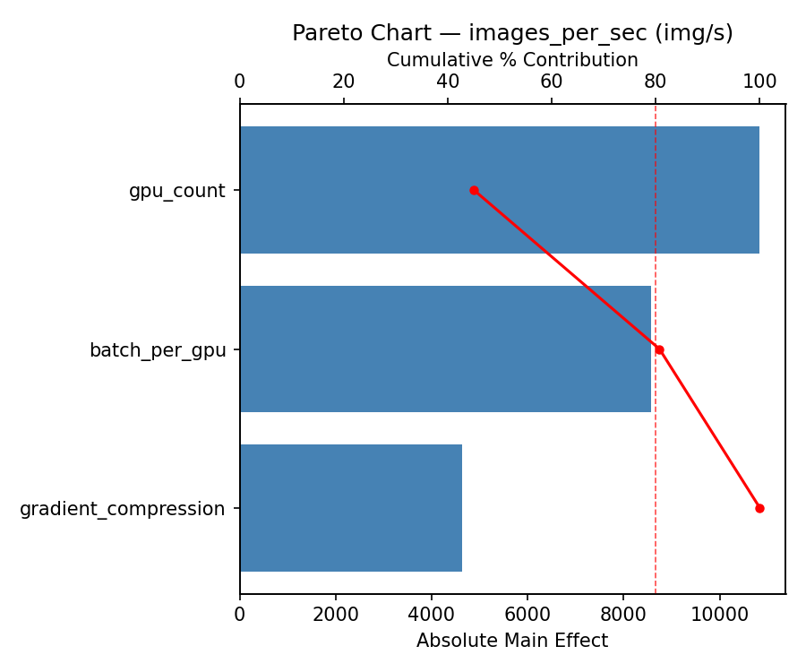
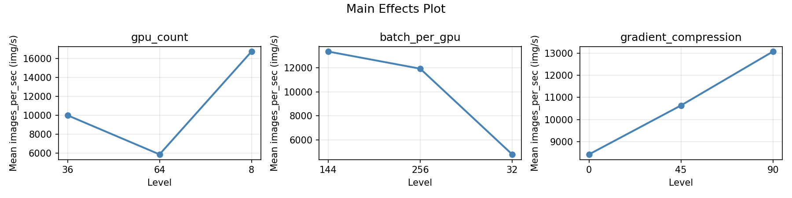
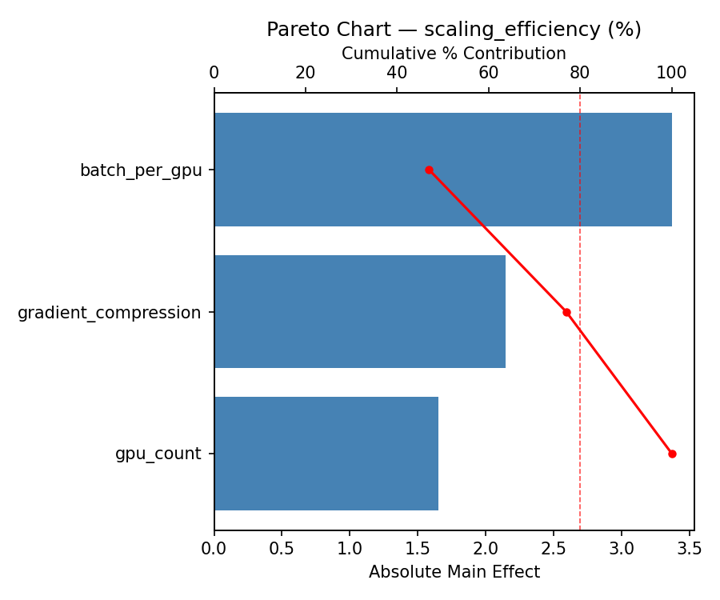
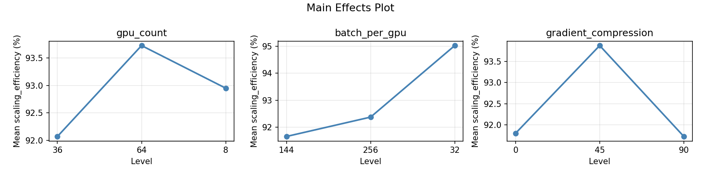
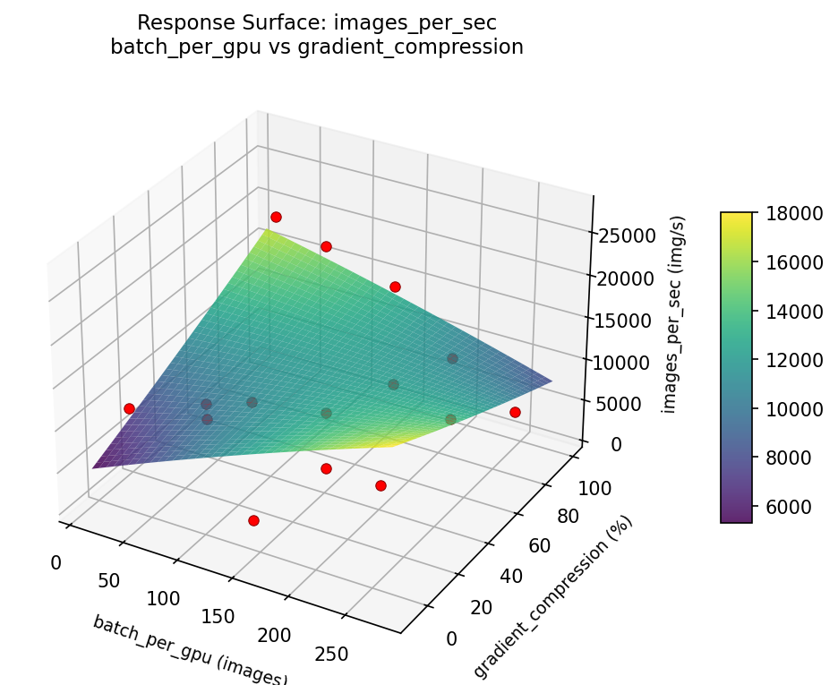
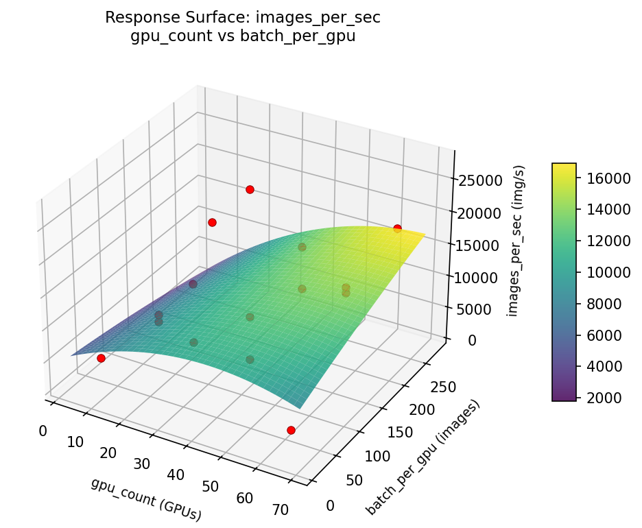
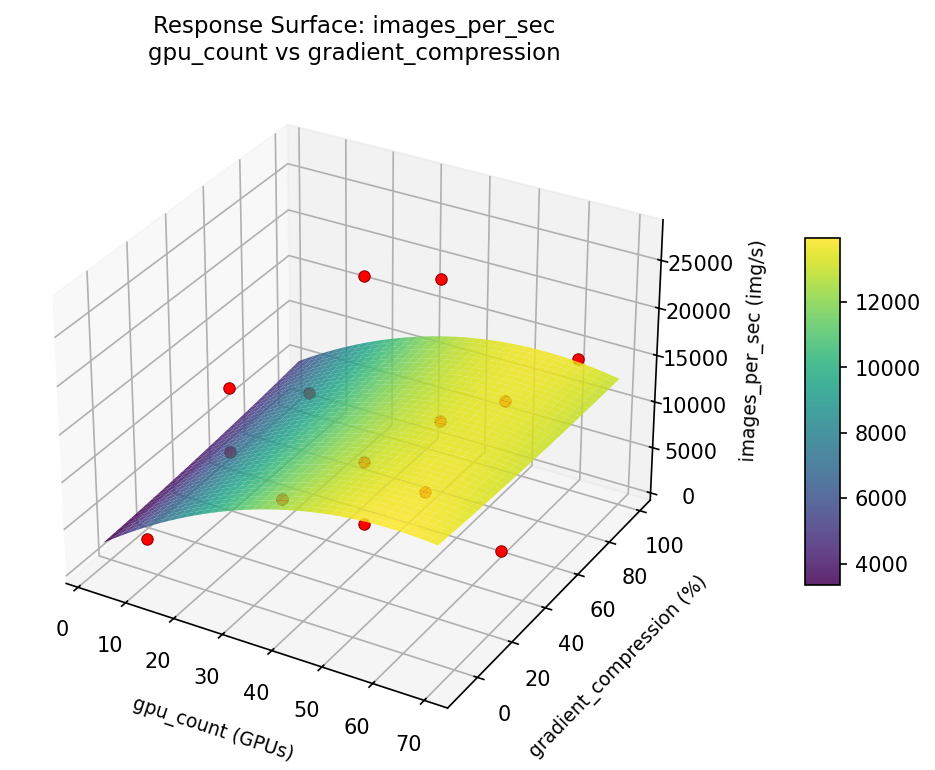
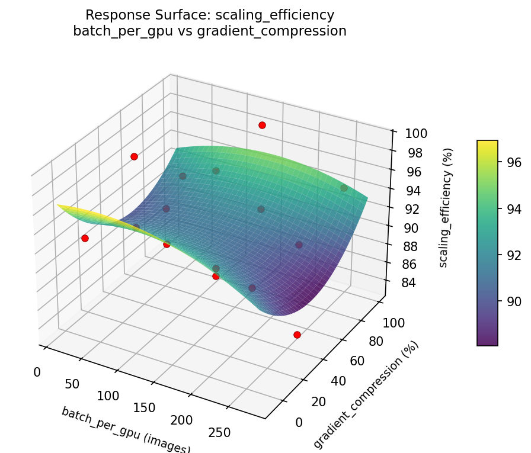
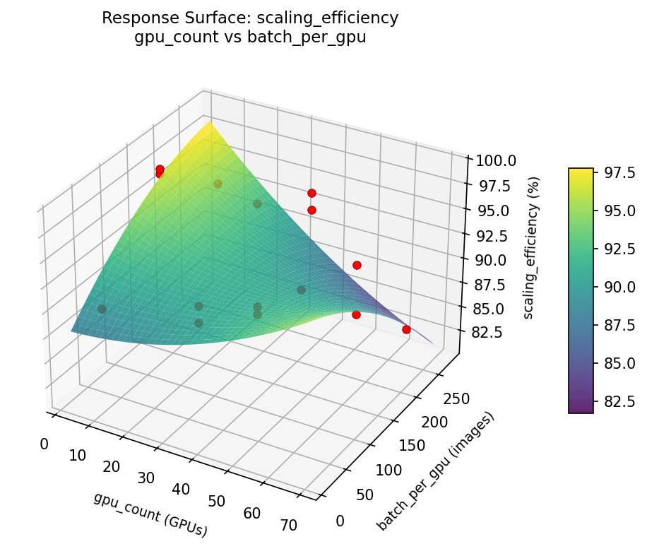
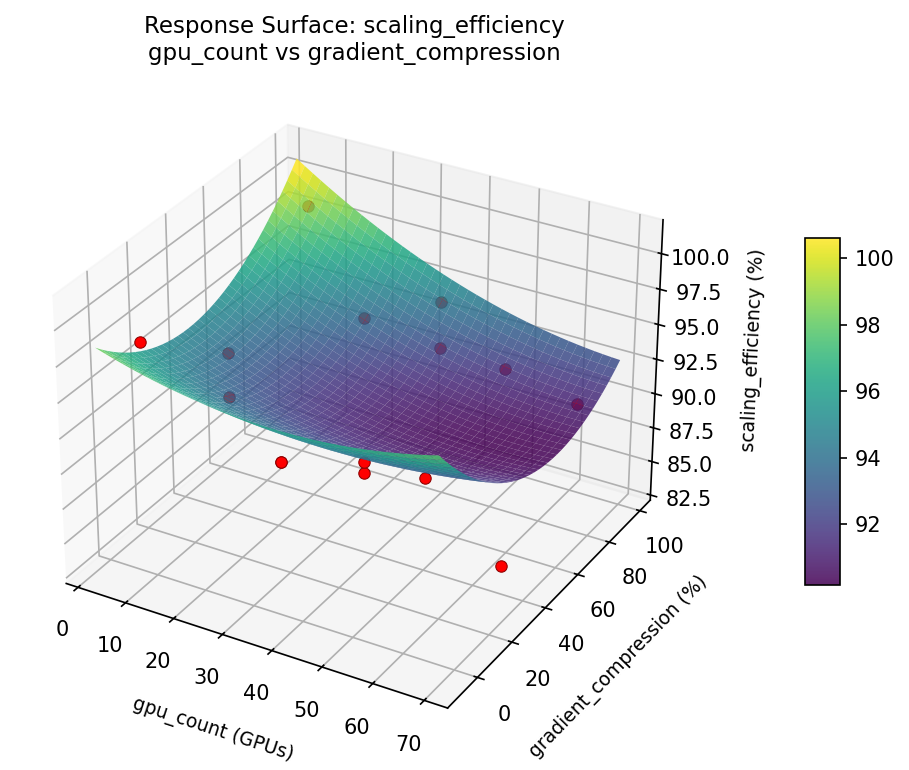

Summary
This experiment investigates distributed deep learning scaling. Optimize multi-GPU distributed training configuration for ResNet-50 on ImageNet.
The design varies 3 factors: gpu count (GPUs), ranging from 8 to 64, batch per gpu (images), ranging from 32 to 256, and gradient compression (%), ranging from 0 to 90. The goal is to optimize 2 responses: images per sec (img/s) (maximize) and scaling efficiency (%) (maximize).
A Box-Behnken design was chosen because it efficiently fits quadratic models with 3 continuous factors while avoiding extreme corner combinations — requiring only 15 runs instead of the 8 needed for a full factorial at two levels.
Quadratic response surface models were fitted to capture potential curvature and factor interactions. The RSM contour plots below visualize how pairs of factors jointly affect each response.
Key Findings
For images per sec, the most influential factors were batch per gpu (42.1%), gradient compression (39.2%), gpu count (18.7%). The best observed value was 27276.1 (at gpu count = 64, batch per gpu = 256, gradient compression = 45).
For scaling efficiency, the most influential factors were gradient compression (45.2%), batch per gpu (36.3%), gpu count (18.5%). The best observed value was 99.0 (at gpu count = 8, batch per gpu = 256, gradient compression = 45).
Recommended Next Steps
- Run confirmation experiments at the predicted optimal settings to validate the model.
- Consider whether any fixed factors should be varied in a future study.
Experimental Setup
Factors
| Factor | Levels | Type | Unit |
|---|
gpu_count | 8, 64 | continuous | GPUs |
batch_per_gpu | 32, 256 | continuous | images |
gradient_compression | 0, 90 | continuous | % |
Fixed: none
Responses
| Response | Direction | Unit |
|---|
images_per_sec | ↑ maximize | img/s |
scaling_efficiency | ↑ maximize | % |
Experimental Matrix
The Box-Behnken Design produces 15 runs. Each row is one experiment with specific factor settings.
| Run | gpu_count | batch_per_gpu | gradient_compression |
|---|
| 1 | 36 | 32 | 0 |
| 2 | 36 | 144 | 45 |
| 3 | 64 | 144 | 90 |
| 4 | 64 | 144 | 0 |
| 5 | 36 | 144 | 45 |
| 6 | 36 | 144 | 45 |
| 7 | 8 | 144 | 90 |
| 8 | 64 | 32 | 45 |
| 9 | 36 | 32 | 90 |
| 10 | 64 | 256 | 45 |
| 11 | 8 | 144 | 0 |
| 12 | 36 | 256 | 90 |
| 13 | 8 | 32 | 45 |
| 14 | 8 | 256 | 45 |
| 15 | 36 | 256 | 0 |
How to Run
$ doe info --config use_cases/15_distributed_training/config.json
$ doe generate --config use_cases/15_distributed_training/config.json --output results/run.sh --seed 42
$ bash results/run.sh
$ doe analyze --config use_cases/15_distributed_training/config.json
$ doe optimize --config use_cases/15_distributed_training/config.json
$ doe report --config use_cases/15_distributed_training/config.json --output report.html
Analysis Results
Generated from actual experiment runs.
Response: images_per_sec
Pareto Chart

Main Effects Plot

Response: scaling_efficiency
Pareto Chart

Main Effects Plot

Response Surface Plots
3D surfaces fitted with quadratic RSM. Red dots are observed data points.
📊
How to Read These Surfaces
Each plot shows predicted response (vertical axis) across two factors while other factors are held at center. Red dots are actual experimental observations.
- Flat surface — these two factors have little effect on the response.
- Tilted plane — strong linear effect; moving along one axis consistently changes the response.
- Curved/domed surface — quadratic curvature; there is an optimum somewhere in the middle.
- Saddle shape — significant interaction; the best setting of one factor depends on the other.
- Red dots far from surface — poor model fit in that region; be cautious about predictions there.
images_per_sec (img/s) — R² = 0.831, Adj R² = 0.526
Moderate fit — surface shows general trends but some noise remains.
Curvature detected in batch_per_gpu, gradient_compression — look for a peak or valley in the surface.
Strongest linear driver: batch_per_gpu (increases images_per_sec).
Notable interaction: gpu_count × batch_per_gpu — the effect of one depends on the level of the other. Look for a twisted surface.
scaling_efficiency (%) — R² = 0.627, Adj R² = -0.045
Moderate fit — surface shows general trends but some noise remains.
Curvature detected in gradient_compression, gpu_count — look for a peak or valley in the surface.
Strongest linear driver: batch_per_gpu (decreases scaling_efficiency).
Notable interaction: gpu_count × batch_per_gpu — the effect of one depends on the level of the other. Look for a twisted surface.
images: per sec batch per gpu vs gradient compression

images: per sec gpu count vs batch per gpu

images: per sec gpu count vs gradient compression

scaling: efficiency batch per gpu vs gradient compression

scaling: efficiency gpu count vs batch per gpu

scaling: efficiency gpu count vs gradient compression

Full Analysis Output
=== Main Effects: images_per_sec ===
Factor Effect Std Error % Contribution
--------------------------------------------------------------
gpu_count 9143.9500 1997.6298 42.1%
gradient_compression 6382.5000 1997.6298 29.4%
batch_per_gpu 6215.2000 1997.6298 28.6%
=== Summary Statistics: images_per_sec ===
gpu_count:
Level N Mean Std Min Max
------------------------------------------------------------
36 7 9785.4286 7214.6845 1100.5000 20235.7000
64 4 6920.5750 3516.3765 3806.9000 11499.3000
8 4 16064.5250 10173.5266 2693.1000 27276.1000
batch_per_gpu:
Level N Mean Std Min Max
------------------------------------------------------------
144 7 10633.8571 9817.8742 1100.5000 27276.1000
256 4 7642.5750 7297.1113 2723.4000 18500.0000
32 4 13857.7750 2745.5949 11499.3000 16643.6000
gradient_compression:
Level N Mean Std Min Max
------------------------------------------------------------
0 4 6466.7500 6804.3168 2693.1000 16643.6000
45 7 11882.0571 7060.7804 1100.5000 20235.7000
90 4 12849.2500 10000.7841 4796.2000 27276.1000
=== Main Effects: scaling_efficiency ===
Factor Effect Std Error % Contribution
--------------------------------------------------------------
gradient_compression 6.7750 1.1818 48.7%
gpu_count 5.3250 1.1818 38.3%
batch_per_gpu 1.8143 1.1818 13.0%
=== Summary Statistics: scaling_efficiency ===
gpu_count:
Level N Mean Std Min Max
------------------------------------------------------------
36 7 94.8000 2.7080 91.3000 98.5000
64 4 92.4250 4.8624 87.9000 99.0000
8 4 89.4750 5.9337 83.4000 97.4000
batch_per_gpu:
Level N Mean Std Min Max
------------------------------------------------------------
144 7 93.4143 4.9144 87.1000 99.0000
256 4 91.6000 6.5243 83.4000 98.5000
32 4 92.7250 2.0255 90.0000 94.9000
gradient_compression:
Level N Mean Std Min Max
------------------------------------------------------------
0 4 97.4500 1.8267 94.9000 99.0000
45 7 91.2429 4.4669 83.4000 98.2000
90 4 90.6750 3.7456 87.1000 94.7000
Optimization Recommendations
=== Optimization: images_per_sec ===
Direction: maximize
Best observed run: #10
gpu_count = 64
batch_per_gpu = 256
gradient_compression = 45
Value: 27276.1
RSM Model (linear, R² = 0.05):
Coefficients:
intercept: +10695.8933
gpu_count: +1634.1250
batch_per_gpu: +1714.1500
gradient_compression: -369.2250
Predicted optimum:
gpu_count = 64
batch_per_gpu = 256
gradient_compression = 45
Predicted value: 14044.1683
Factor importance:
1. batch_per_gpu (effect: 6246.3, contribution: 44.0%)
2. gradient_compression (effect: 4686.9, contribution: 33.0%)
3. gpu_count (effect: 3268.3, contribution: 23.0%)
=== Optimization: scaling_efficiency ===
Direction: maximize
Best observed run: #14
gpu_count = 36
batch_per_gpu = 144
gradient_compression = 45
Value: 99.0
RSM Model (linear, R² = 0.02):
Coefficients:
intercept: +92.7467
gpu_count: +0.8125
batch_per_gpu: -0.2125
gradient_compression: +0.1000
Predicted optimum:
gpu_count = 64
batch_per_gpu = 32
gradient_compression = 45
Predicted value: 93.7717
Factor importance:
1. batch_per_gpu (effect: 5.1, contribution: 66.5%)
2. gpu_count (effect: 1.6, contribution: 21.2%)
3. gradient_compression (effect: 1.0, contribution: 12.4%)
Multi-Objective Optimization
When responses compete, Derringer–Suich desirability finds the best compromise.
Each response is scaled to a 0–1 desirability, then combined via a weighted geometric mean.
Overall Desirability
D = 0.6343
Per-Response Desirability
| Response | Weight | Desirability | Predicted | Dir |
|---|
images_per_sec |
1.5 |
|
16643.60 0.5853 16643.60 img/s |
↑ |
scaling_efficiency |
1.0 |
|
94.90 0.7156 94.90 % |
↑ |
Recommended Settings
| Factor | Value |
|---|
gpu_count | 8 GPUs |
batch_per_gpu | 144 images |
gradient_compression | 90 % |
Source: from observed run #12
Trade-off Summary
Sacrifice = how much worse than single-objective best.
| Response | Predicted | Best Observed | Sacrifice |
|---|
scaling_efficiency | 94.90 | 99.00 | +4.10 |
Top 3 Runs by Desirability
| Run | D | Factor Settings |
|---|
| #3 | 0.6200 | gpu_count=36, batch_per_gpu=144, gradient_compression=45 |
| #10 | 0.5683 | gpu_count=64, batch_per_gpu=144, gradient_compression=90 |
Model Quality
| Response | R² | Type |
|---|
scaling_efficiency | 0.1230 | linear |
Full Multi-Objective Output
============================================================
MULTI-OBJECTIVE OPTIMIZATION
Method: Derringer-Suich Desirability Function
============================================================
Overall desirability: D = 0.6343
Response Weight Desirability Predicted Direction
---------------------------------------------------------------------
images_per_sec 1.5 0.5853 16643.60 img/s ↑
scaling_efficiency 1.0 0.7156 94.90 % ↑
Recommended settings:
gpu_count = 8 GPUs
batch_per_gpu = 144 images
gradient_compression = 90 %
(from observed run #12)
Trade-off summary:
images_per_sec: 16643.60 (best observed: 27276.10, sacrifice: +10632.50)
scaling_efficiency: 94.90 (best observed: 99.00, sacrifice: +4.10)
Model quality:
images_per_sec: R² = 0.1313 (linear)
scaling_efficiency: R² = 0.1230 (linear)
Top 3 observed runs by overall desirability:
1. Run #12 (D=0.6343): gpu_count=8, batch_per_gpu=144, gradient_compression=90
2. Run #3 (D=0.6200): gpu_count=36, batch_per_gpu=144, gradient_compression=45
3. Run #10 (D=0.5683): gpu_count=64, batch_per_gpu=144, gradient_compression=90